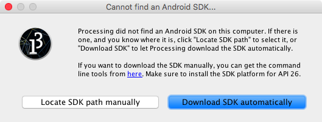
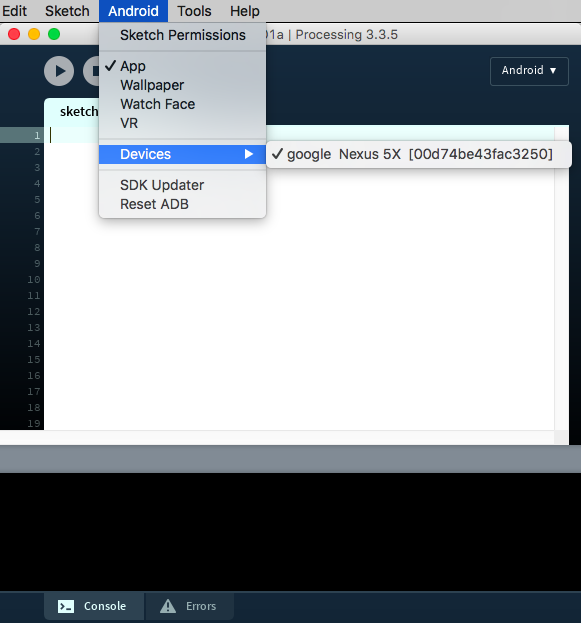
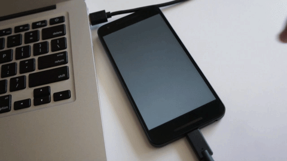

Getting started
Welcome to Processing for Android! In this tutorial you will learn how to use the Android Mode in Processing to run your sketches on an Android device or in the emulator.
Installing the SDK
The first time you open the Android mode after installing it through the CM or manually, you will see this window, asking to either locate a pre-installed Android SDK, or download the Android SDK automatically:

If you still want to use an SDK already downloaded to your computer, choose the "Locate SDK path manually" option and select the folder containing the SDK. However, this SDK should include Android 8.0 (API level 26) or higher. In order to manually download and install the SDK, go to this page, scroll down to the command line tools section and select the one for your Operating System. Doing this could be convenient if you plan to use the same SDK from different development tools (command line, Android Studio, etc.) in addition to Processing. However, keep in mind that the SDK that Processing downloads and installs automatically gets stored inside the mode folder, and does not interfere with any other SDK installed in your computer.
If the SDK was located or installed succesfully, you should see your Android device in the "Select device" list after connecting it to the computer:

Writing a simple sketch
Let's write a short Processing sketch to run on your Android phone or tablet and make sure everything works as expected. In the following code, we paint the half of the screen receiving a touchpress with the color black. Note that nothing in this sketch is really specific to Android, so you could run it in the Java mode as well. This portability of Processing sketches (as long as they don't rely on any platform-specific features) is useful for testing, as the Java mode includes an integrated debugger that can help to spot errors in the code more easily.
void setup() {
fullScreen();
noStroke();
fill(0);
}
void draw() {
background(204);
if (mousePressed) {
if (mouseX < width/2) {
rect(0, 0, width/2, height); // Left
} else {
rect(width/2, 0, width/2, height); // Right
}
}
}
Running the sketch on your device
Before hitting the run button or selecting "Run on Device" under the Sketch menu, make sure to:
- Turn on "USB Debugging" on the device - this process varies by device and which version of the OS you have installed. In most of the cases, this setting is located in the Developer Options, under system Setting. On Android 4.2 and higher the Developer Options are hidden by default, but you can enable them by following these instructions.
- If you are running Windows, you need to follow Google's documentation to install a special USB driver and take care of additional settings. If you downloaded the Android SDK automatically in Processing, then the latest USB drivers will be inside the mode folder, under the temp subfolder.
If everything goes well, then your sketch should do something like this on your phone:

Running the sketch on the emulator
If you don't have a device to run your sketch on, you can still use the software emulator. The first time you run a sketch in the emulator, Processing will ask you to download the system image needed by the emulator to work:

After finishing the download, which can take several minutes depending on your internet connection (the system images are around 1GB in size), Processing will boot up the emulator, and then will launch the sketch in it.
Another important tip is not to close the emulator after testing one sketch, just leave it open so you don't need to wait for the emulator to boot up again the next time!
Depending on what sketch you are testing, the emulator appear in a separate window, looking more or less like this: